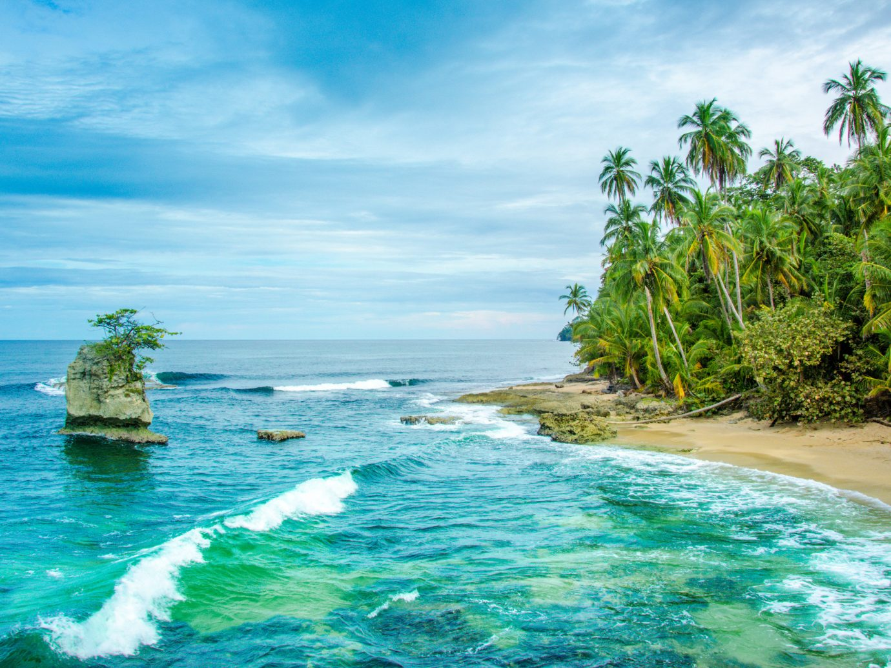
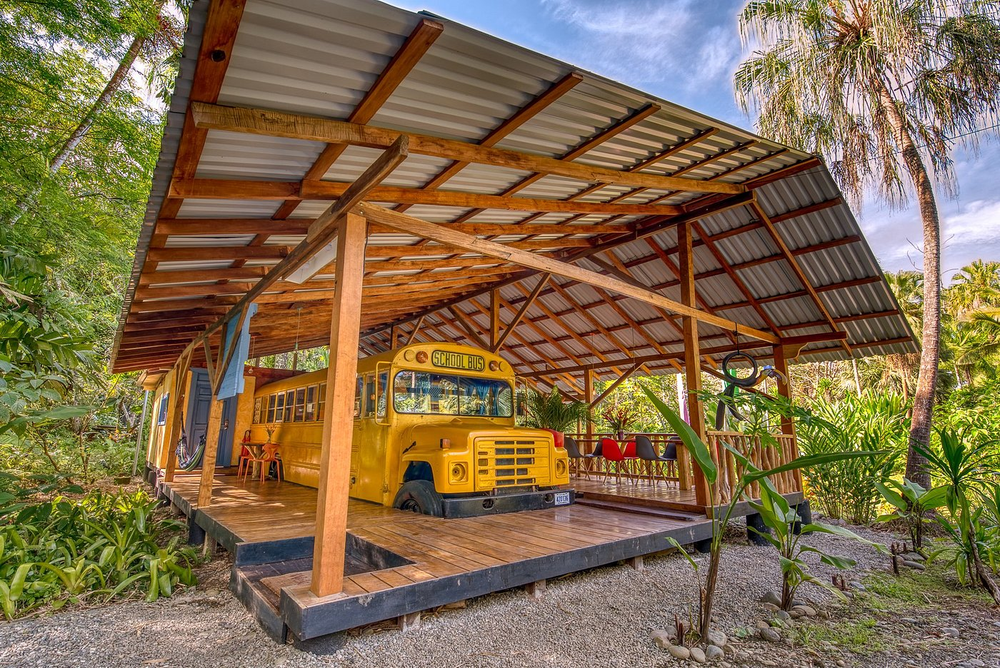
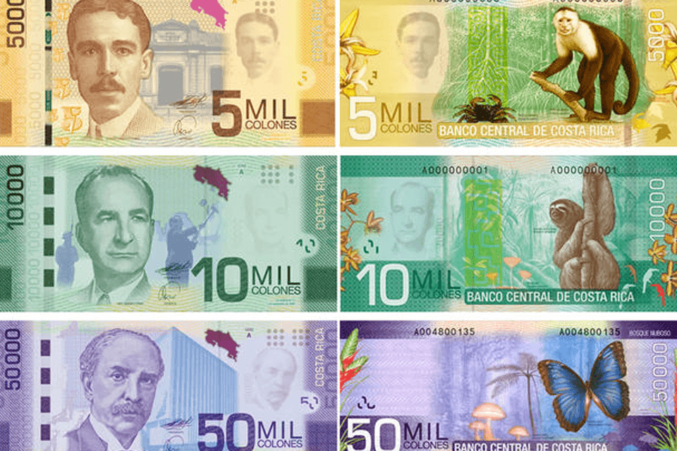
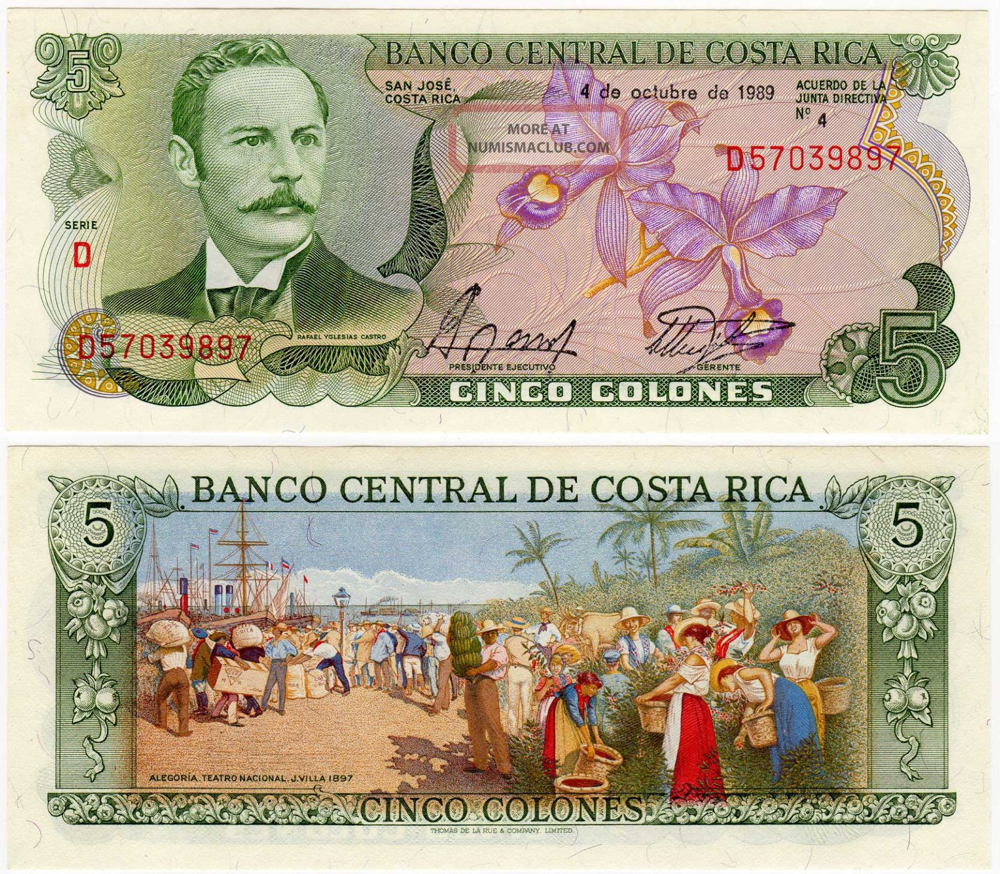
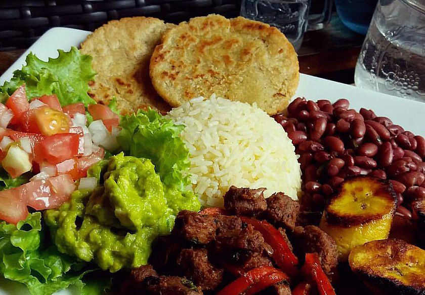
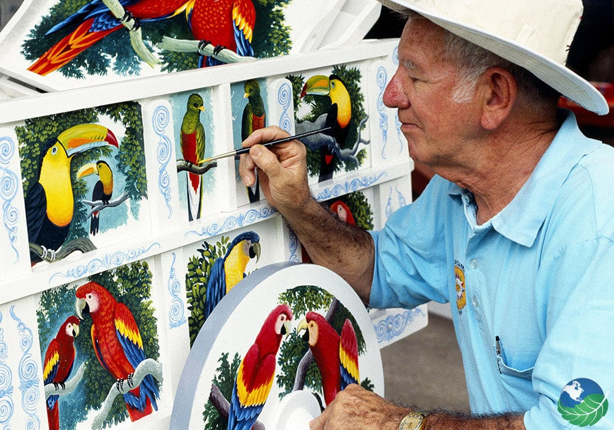

jetsetter costa rica beaches
On Costa Rica’s Caribbean coast, just above the Panamanian border, Playa Manzanillo is the prototypical beach with white-sand shores, azure waters, and a backdrop of palm-fringed rainforest courtesy of the Gandoca-Manzanillo Wildlife Refuge. But despite the abundance of coral reefs, which can be explored by kayak or swimming thanks to the area’s gentle waves, its remote location has largely kept it off the tourist radar (don’t be surprised if your only neighbors are manatees and dolphins). If you’re looking for low-key luxury, set up camp at the Tree House Lodge in nearby Punta Uva, where five sustainably built villas are situated around a century-old Sangrillo tree.
Concerned about where to stay? What to eat? want to see butterflies? see a bit art/culture??
Concerned about where to stay?
Check out the Tree House Lodge https://www.costaricatreehouse.com/

Want to see cool money? Costa Rica has it down when it comes to beautiful and meaningful representation of money. Check out these examples
Modern Money

My Mom's Personal Favorite

Like Delicious and Nutricious Food that will fill you up without the heavy filling? Don't worry Costa Rica has you covered!

Check out how Costa Rica blends its 3 main cultures into unique artstic expressions!

Four Fun Facts
More than ten percent of the world's butterflies live in Costa Rica. The blue morphs is an official symbol of Costa Rica.
National Dish is called the "spotted rooster" or gallo pinto. It's rice and beans cooked together mixed with Salsa Lizano. Can be served for breakfast, lunch, or dinner. Anytime, Anywhere. And it's always good!
Ticos and Ticas are some of the happiest people in the world. Consistenly, Costa Ricans top the World HAppiness Report. Pura Vida!
Though ox carts can be found anywhere in the world, Costa Rican ox carts are famous for their unique and colorful painted designs on the cart, wheels, and oxen yoke that includes geometric designs. As they are painted by hand, no two are alike!